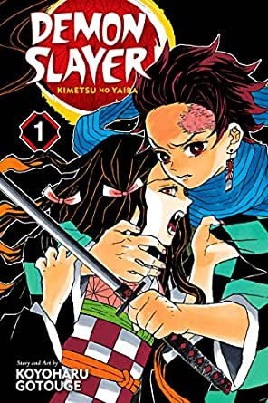

Sipnosis: Cuenta la historia de la humanidad en una época con estética germana del siglo 19, luchando por sobrevivir durante los ataques de unos seres humanoides gigantes llamados titanes.
Precio: Tiene un precio alrededor cada manga de 171 pesos.
Demon Slayer: Kimetsu no Yaiba
Sipnosis: Un adolescente cuya familia fue cruelmente asesinada por un Demonio el cual convirtió a su hermana Nezuko en una de estas criaturas, obligando a Tanjirō a emprender un viaje para cazar a estos seres y de paso ayudar a su hermana a recuperar su humanidad.
Precio: Tiene un precio alrededor cada manga de 130 pesos.

One Pice
Sipnosis: Es la historia de un chico llamado Monkey D. Luffy, quién se inspiró en Shanks, un pirata que le salvó la vida, para convertirse en el Rey de los Piratas. Luffy se convierte en uno de ellos, deseando ser el próximo Rey de los Piratas y se dispone a reunir compañeros de tripulación y comenzar sus aventuras.
Precio: Tiene un precio alrededorcad manga de 180 pesos.
Sipnosis: Hōyō Hinata, aún siendo un estudiante de primaria, ve un partido de voleibol por la televisión, en el cual ve jugar al conocido "Pequeño Gigante". Desde entonces, desea convertirse en alguien como él, debido a que ambos son bajos de estatura, y comienza a aficionarse por el deporte.
Precio: Tiene un precio alrededor cada manga de 231 pesos.